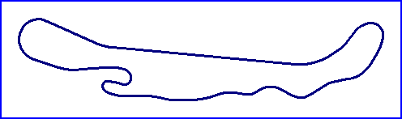

| Length | 2.250 Miles // 3.621 km |
| Direction | Anticlockwise |
Contact Information |
|
| Address |
Pacific Raceways 144th Ave SE Kent WA 98042 |
| Telephone | +1 (1)253 6395927 |
| Website | http://www.pacificraceways.com |
Pacific Raceways

| Length | 2.250 Miles // 3.621 km |
| Direction | Anticlockwise |
Contact Information |
|
| Address |
Pacific Raceways 144th Ave SE Kent WA 98042 |
| Telephone | +1 (1)253 6395927 |
| Website | http://www.pacificraceways.com |
Lasted Updated: 09 May 2003 21:05:57 GMT Daylight Time